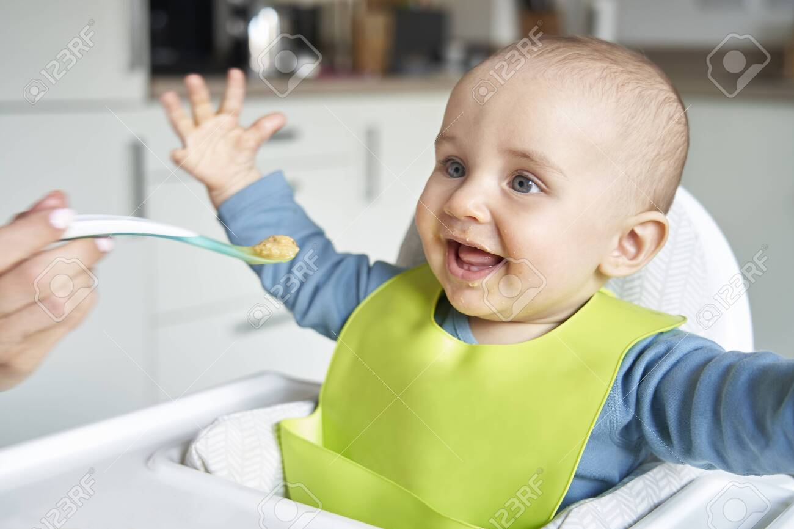
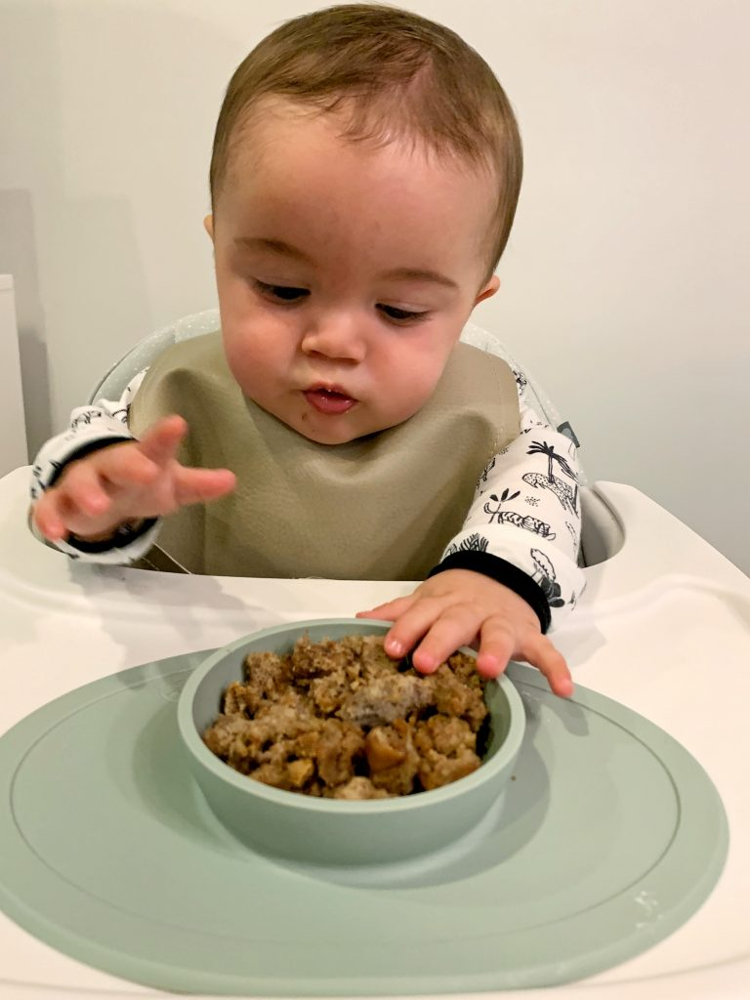
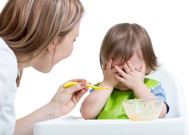
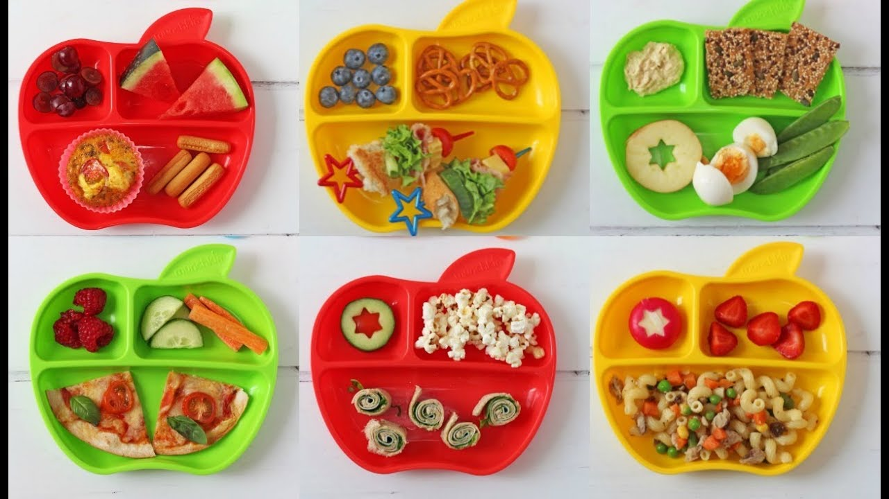
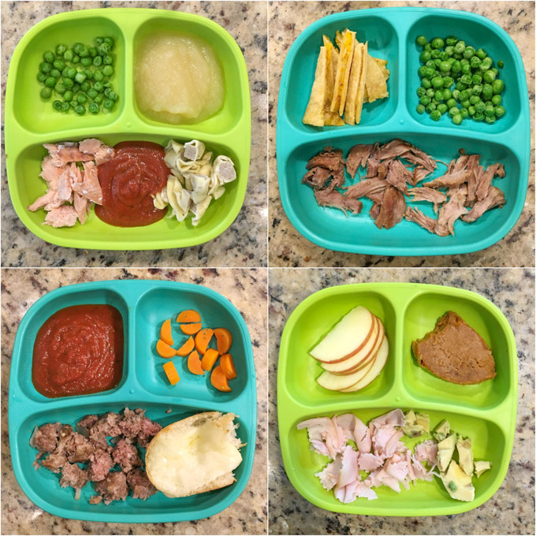

HAPPY BABY AND MOM

- At 1 year old, your child is learning to eat on her own. She can chew her food as well as you can, so she can eat the same foods as the rest of the family.
- At this age, breastmilk still provides important nutrition and protection against disease, but other foods become her main source of nutrition and energy. Feed her other foods first and then breastfeed after if she is still hungry.
At this stage, toddlers are fall into three types of food eaters.
Good eater
With good eater, parents are happy with their toddler's food intake. They will have regular routine of food (Breakfast, lunch, and dinner, with a midmorning snack and a midafternoon snack) and right amount of nutrients. By now, they should be eating, not drinking, their way through the day. So if you are toddler falls into a good eater, just explore more variety of foods. But, be careful with chocking foods and allegertic foods.

Moderate eater
With the moderate eater, they are also called as Picky eaters, they eat foods which they like. picky eaters only comes after the baby turns to 1 year. they like only some kind of taste, or some kind foods. this leads to poor nutrition. For ex: If a toddler likes sugar taste, only having sugary foods which is not good for health. So parents should consider the nutrition part very seriously. You can give food whatever toddler like but in small portion. So that toddler should know get use to other foods. Often check the weights. So that you can understand the toddlers health and foods. Take advice from doctor if you not satisfied with the food intake of your child.

Poor eater
With poor eater, they dont have interest on foods and skipping the meals often time. These kind of behaviour is not healthy. Eventhough feeding child's favourite food, child is not taking it, Its a serious thing to consider. Dont delay to set up an appointment with Doctor.

Some sample Toddler foods are:
- Toddler Breakfast
- Scrambled egg with cheese, tomatoes, and an English muffin.
- Crackers with cottage cheese and a berry smoothie.
- Whole wheat toast with peanut butter and bananas.
- Yogurt with granola, blueberries, and milk.
- Apple slices with almond butter and string cheese.
- Mini bagel with cream cheese and grapes.
- Breakfast sandwich with cantaloupe.

- Toddler lunch
- Spinach Pesto Pasta with peas and a simple side of fruit.
- Pesto Pasta Salad with Sweet Corn, cheese, whole grain cookies, and berries.
- Broccoli Pesto Pasta with a banana and diced chicken or ham.
- Pasta with Marinara Sauce with white beans and diced ham or meatballs. Berries and milk on the side.
- Pasta with Sweet Potato Pasta Sauce, steamed green beans, and melon.
- Veggie Chili Mac with shredded cheese and sliced or diced cucumbers.
- Ravioli with Pasta Sauce (or Alfredo or another favorite sauce) with quickly steamed zucchini and/or an orange.

- Toddler Dinner
- One-Pot Chicken and Broccoli Pasta.
- Instant Pot Mac and Cheese.
- Healthy Buffalo Chicken Sweet Potatoes.
- Chicken Alfredo Lasagna Roll-Ups.
- Mashed yellow peas.
- Pumpkin carrot soup.
- Pureed chicken with breadcrumbs.

Go to top